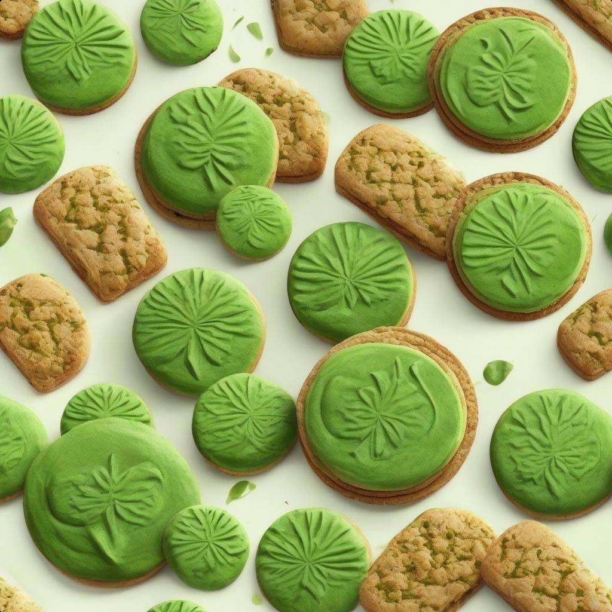
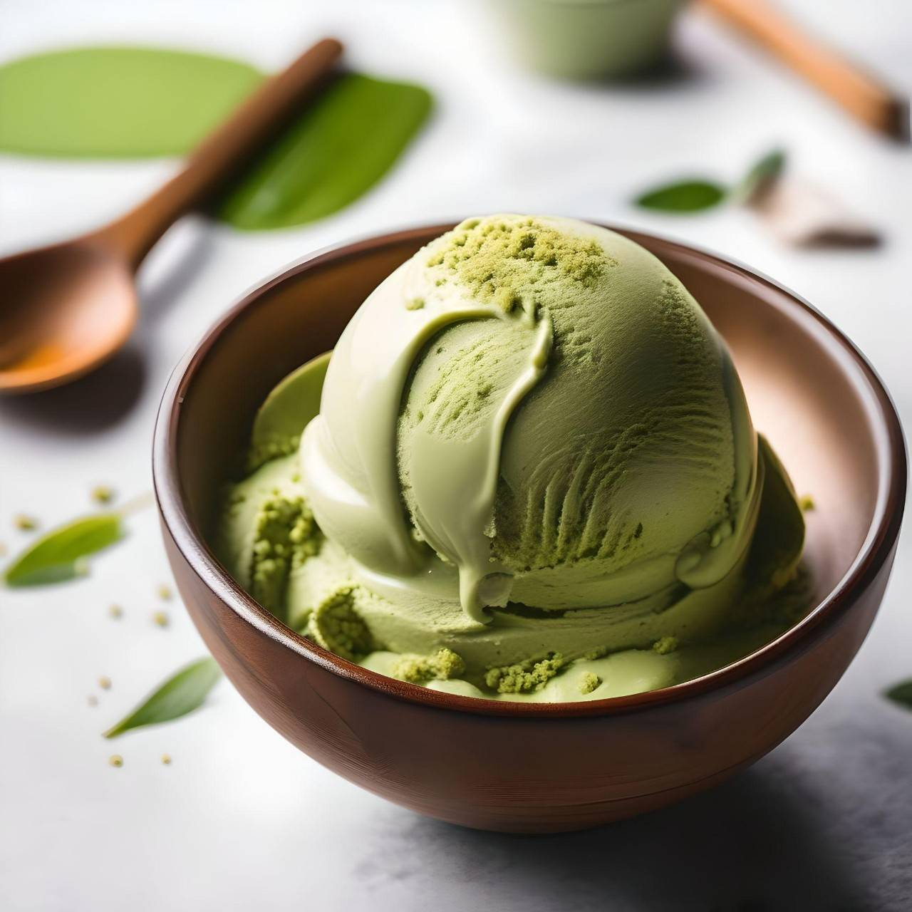
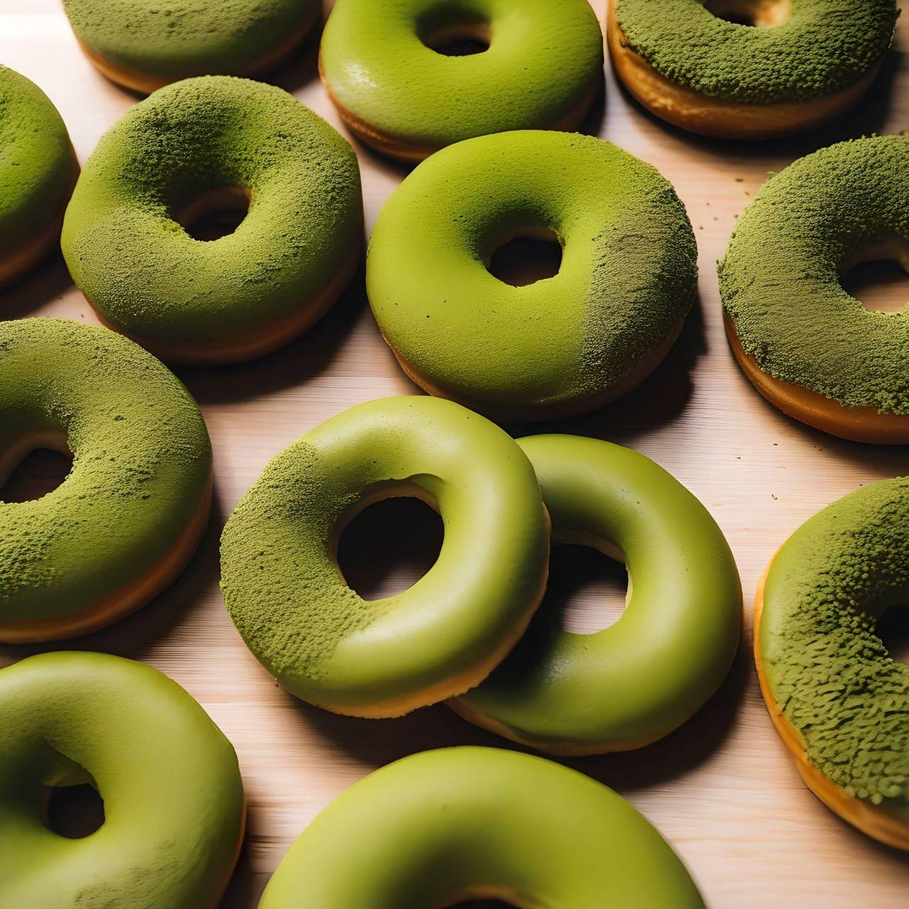
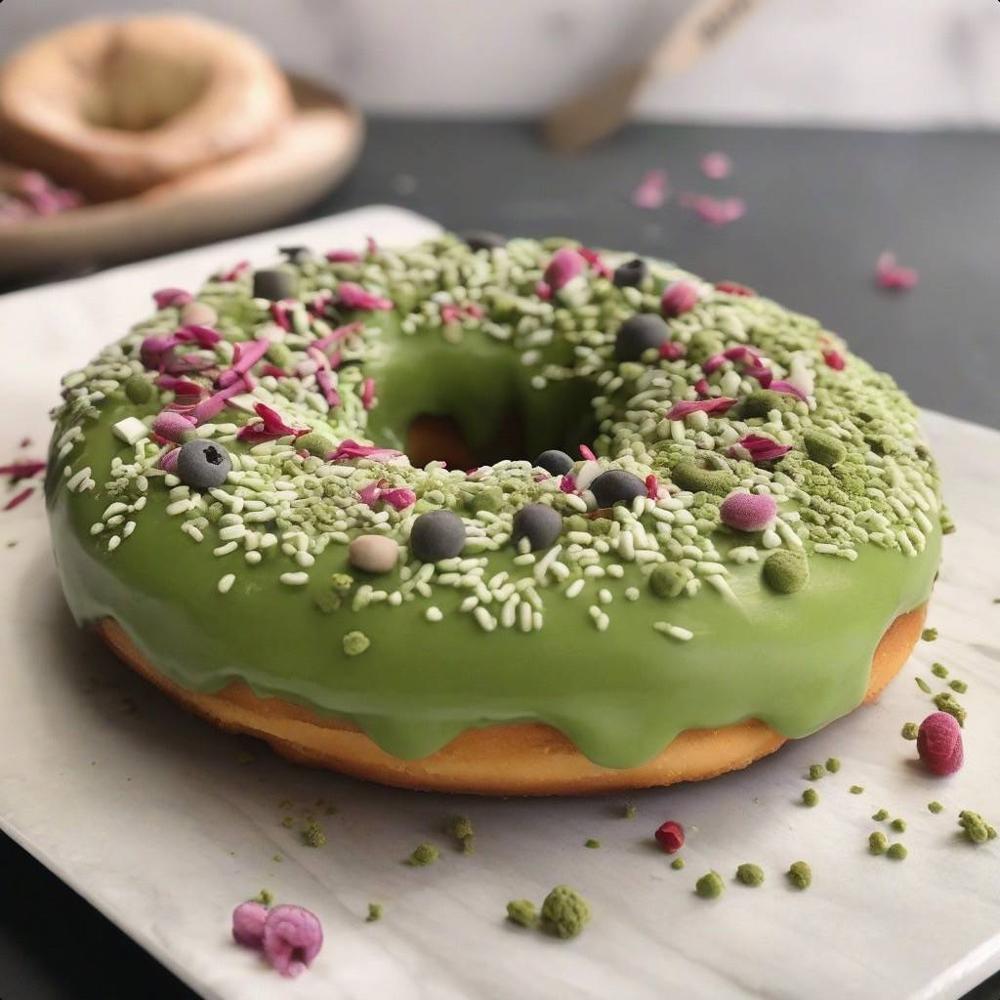
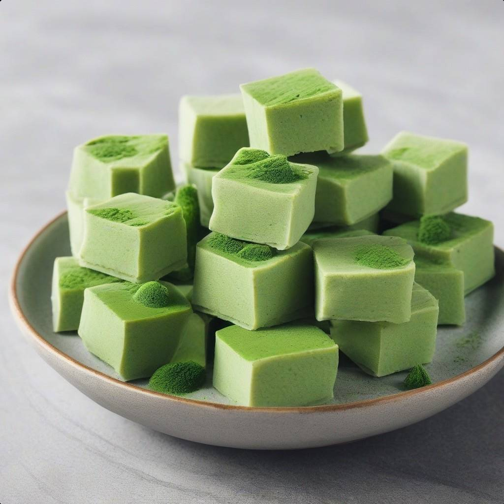
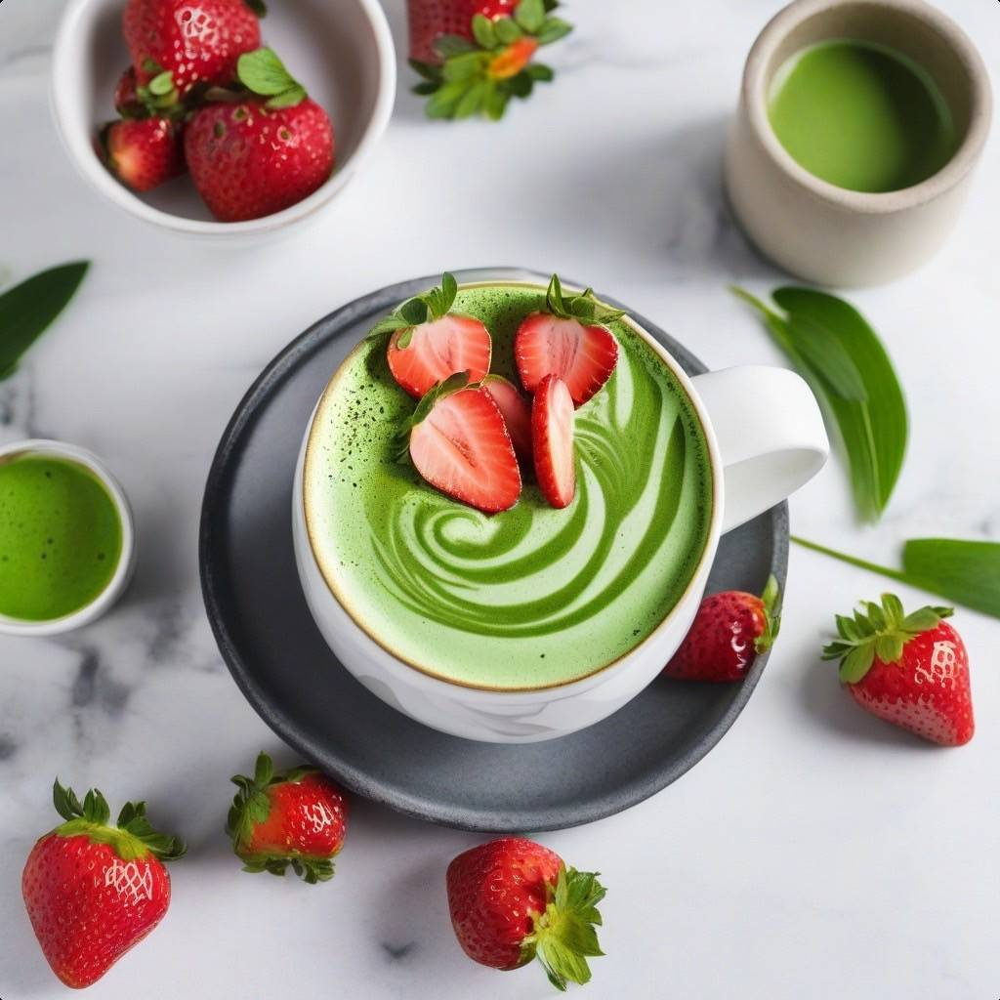

|
 |
 |  |  |
 |  |  |
擂好的茶，彷彿帶有海苔與穀物香氣的抹茶，因這份雷同而讓我們產生，如果真的把他們做結合會如何呢?「粉」是一項精選優質的茶粉，來自抹茶茶葉中最嫩、最優雅的一絲翠綠。不僅保留了抹茶的經典風味，更包留擂茶主料芝麻、花生元素，是一種獨特的茶粉饗宴，為喜愛抹茶及擂茶的你帶來無限的品味享受。
價格：NT$650
「抹茶撞巧克力」是一項很精緻的抹茶巧克力，將頂級抹茶風味與濃郁巧克力完美結合，可帶給食用者一場優雅的巧克力之旅。每一口都融合了抹茶的綿密香氣和巧克力的滑順口感，成就了這款絕妙的巧克力體驗。
價格：NT$1000
「找茶餅」是一項極具品味的特殊茶風味餅乾，這項產品結合了日式抹茶粉和優質食材，呈現出濃厚的抹茶香氣和香脆的餅乾口感。這項美味點心帶您進入一場綠茶的香濃世界，為味蕾帶來愉悅的享受。
價格：NT$500
「冫水」是一款結合茶的濃郁和冰淇淋的滑順口感，為您帶來一場夢幻的冰淇淋奇遇。每一口都是茶香和冰涼交織，讓您沉浸在極致的冰淇淋享受中。(冫/ㄅㄧㄥ)
價格：NT$900
「我棒棒」是一款清新日式抹茶風味的冰棒，以頂級抹茶製成，融合冰涼的口感，為消費者帶來一場夏日的抹茶冰品饗宴。在炎熱的天氣中，讓這項抹茶冰棒成為在炎炎的夏日中不可或缺的單品之一。
價格：NT$600
「圈圈圓圓」，是一種與抹茶口味結合的甜甜圈，它的口感鬆軟，帶有抹茶苦甜的味道。甜圈內沒有加餡，此設計是避免食用者過於甜膩，讓食用的消費者在口感中享受濃郁的抹茶香味。
價格：NT$500
「快酪跑」是一項結合抹茶風味與濃郁奶酪的極致小甜點，這項抹茶奶酪的茶香和奶香是你從未體驗過的味道。每一口都讓你感到與眾不同。為你的味蕾帶來不可思議的體驗與感受。
價格：NT$800
 |
 |  |
 |
「歐很蕾ㄟ」是一項集結抹茶的深邃與歐蕾的柔滑於一身的經典茶飲。這款茶品結合了抹茶的濃郁香氣與歐蕾的絲滑口感，為您帶來一場充滿雅致風情的茶葉饗宴。
價格：NT$900
「真的莓茶」，是一款具有草莓的酸甜味和抹茶苦甜味的茶飲，將鮮美的草莓風味與濃郁的抹茶融合在一杯之中，和我們俗稱的拿鐵有些相似，所以熟客基本都稱它為草莓抹茶拿鐵，真的沒差。。。
價格：NT$900
「有在擂」，主要材料為：茶葉、黑芝麻、白芝麻、花生、茶粉以及本店自製魔法茶粉。口味變化較豐富，且同時滿足嗅覺、味覺的享受，無論是嬰幼兒和牙齒不好的長輩皆可飲用，是相當受歡迎的品項。
價格：NT$900
「觀心你」，屬於青茶，鐵觀音原是茶樹品種名，由於它適合製成烏龍茶，其烏龍茶成品遂亦名為鐵觀音。所謂鐵觀音茶即以鐵觀音品種茶樹製成的烏龍茶。
價格：NT$900